This ongoing series of paintings is based on the Grimms' tales. Grimms' everlasting motifs, rich Pan-European material and incorrect morals make an inexhaustible source of inspiration. I juxtapose the tradition of storytelling with the rich history of painting in order to reintroduce distant stories and values to our modern cynical world.
"Von dem Machandelboom"
70×63 cm, oil on linen (2010)
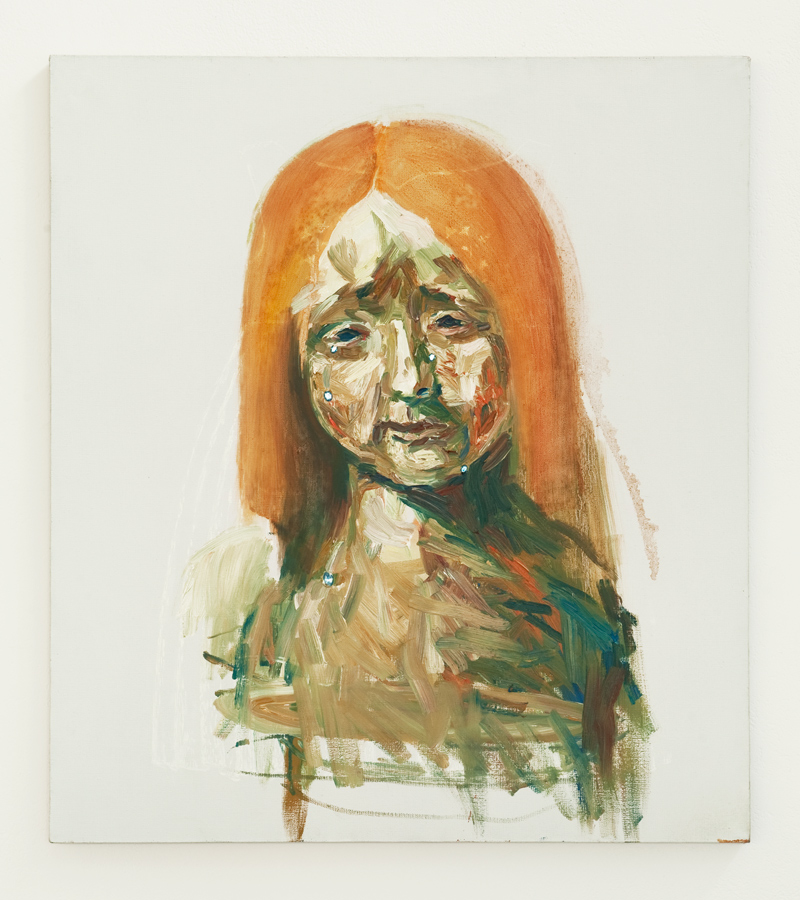
"Allerleirauch"
63×70 cm, oil on linen (2011)
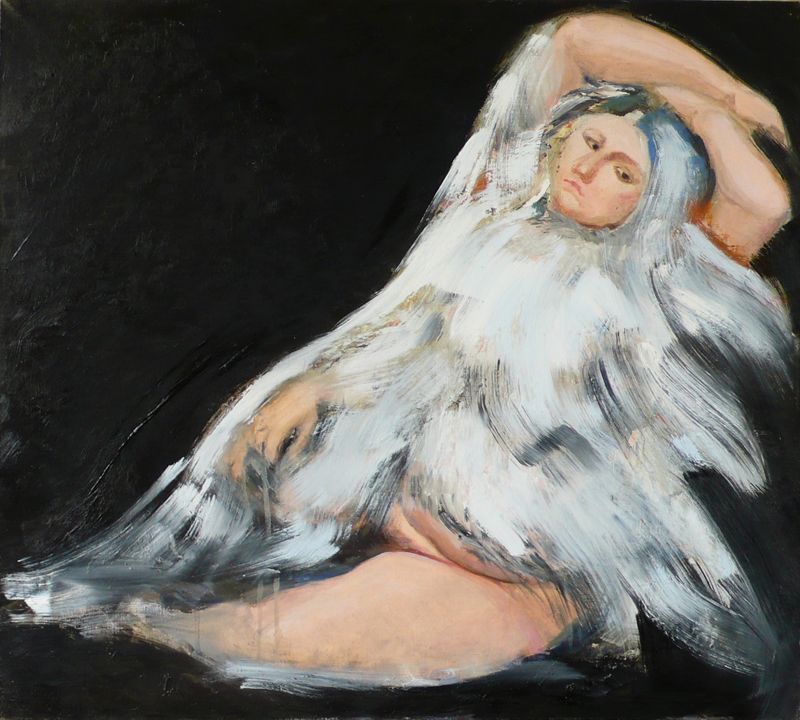
"Marienkind"
56×42 cm, oil on linen (2011)
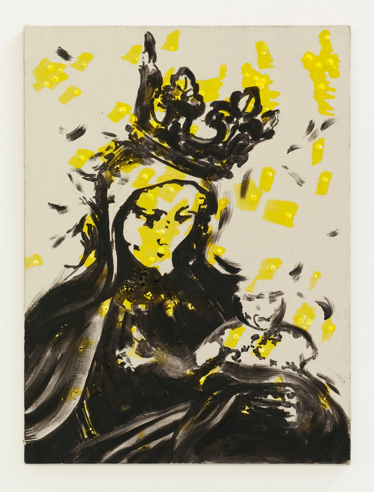
"Die Wichtelmänner"
42 cm long, oil on cut linen (2011)
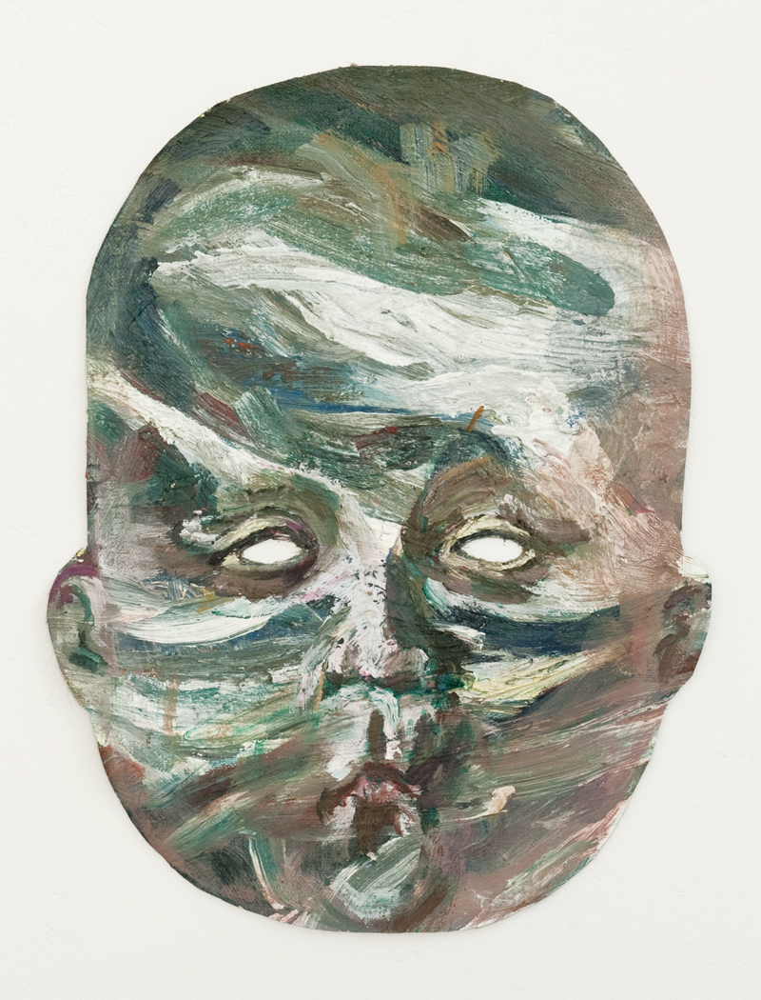
"Die Gänsemagd"
54×40 cm, oil on linen (2010)
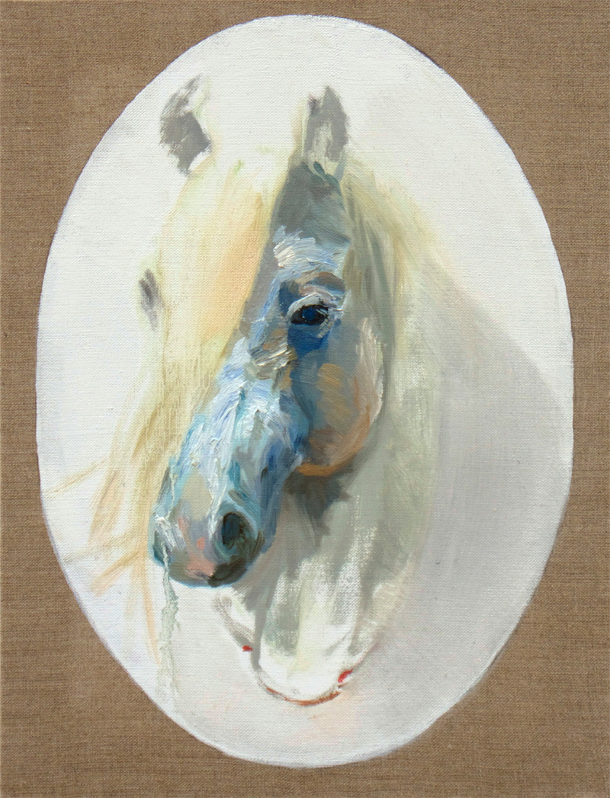
"Rumpelstilzchen"
45×30 cm, oil on linen (2010)
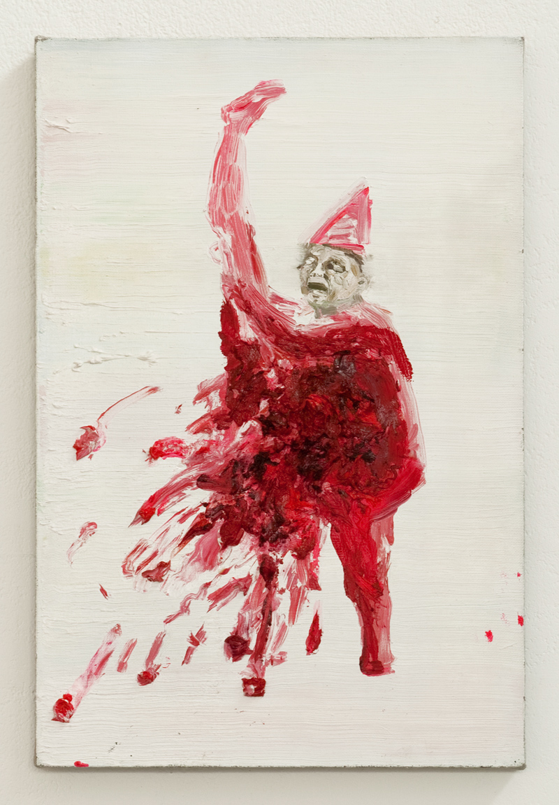
"Die weisse und die schwarze Braut"
35×27 cm, oil on linen (2010)
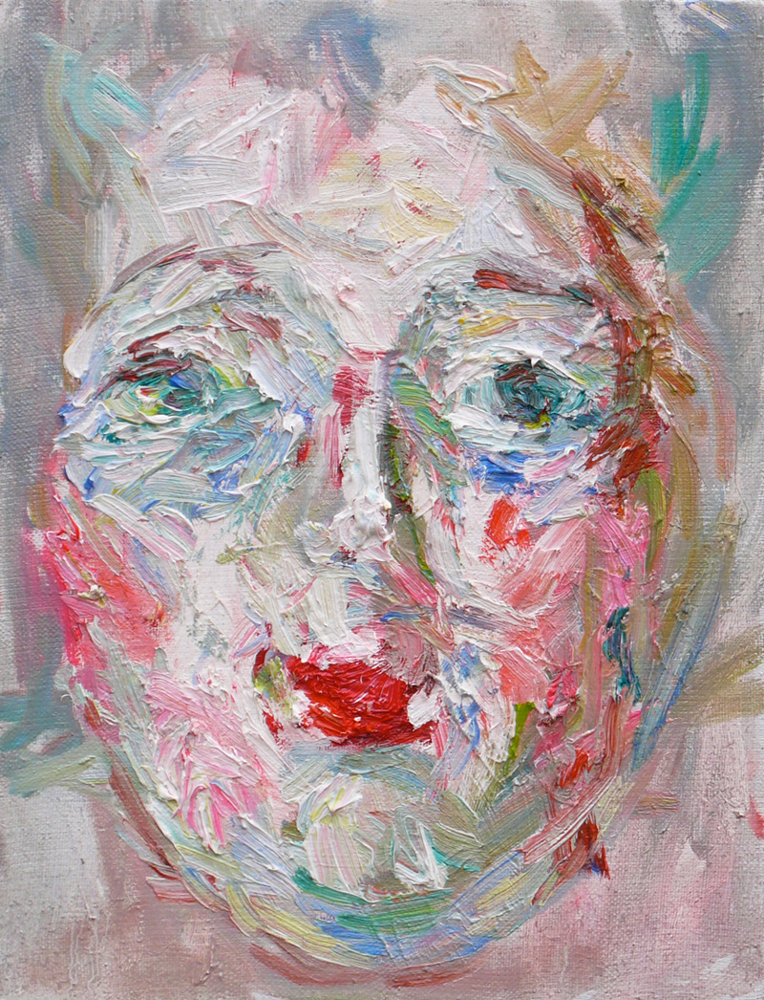
"Der gelernte Jäger"
20 cm diameter, oil on canvas (2010)
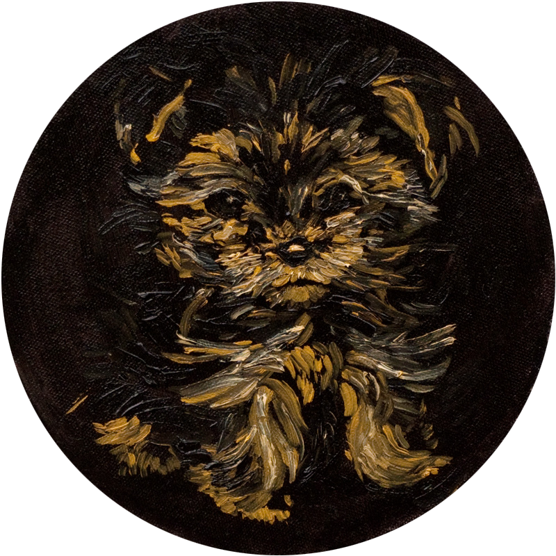
"Der Trommler"
46×40 cm, oil on linen (2010)
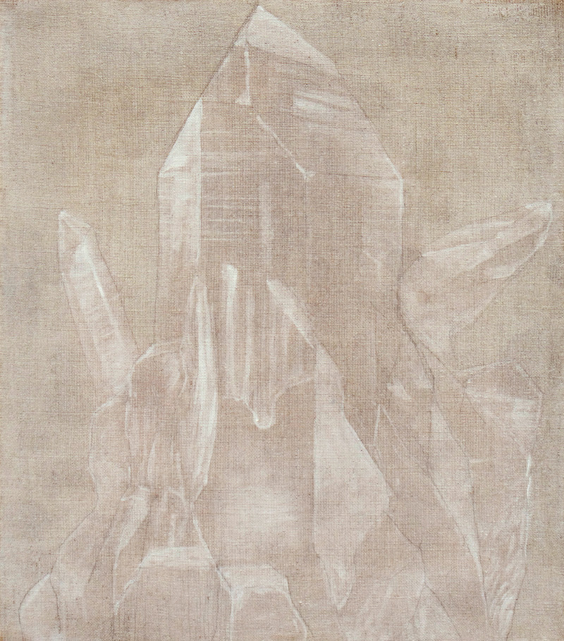
"Der Bärenhäuter"
60×60 cm, acrylic and oil on canvas (2010)
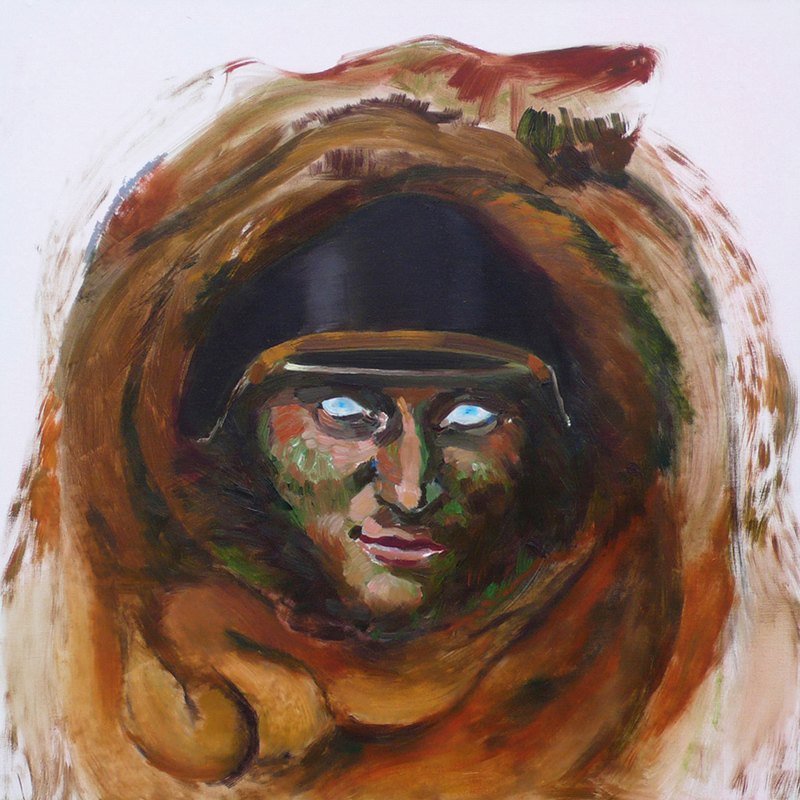
"Der Meisterdieb"
70×63 cm, oil on linen (2010)
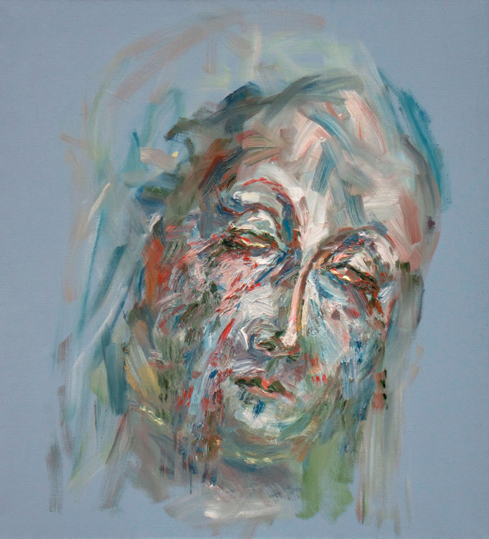
"Der Bauer und der Teufel"
56×47 cm, oil and acrylic on linen (2009)
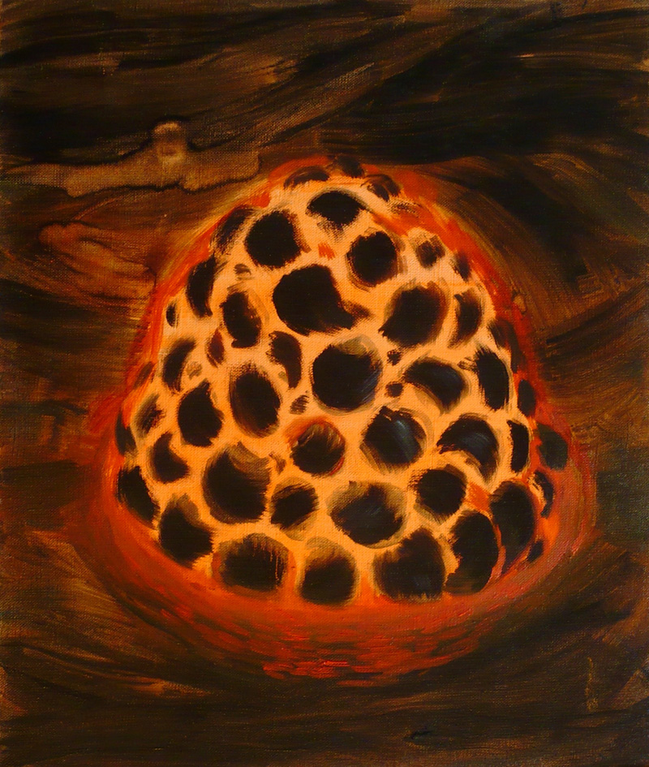
This ongoing series of paintings is based on the Grimms' tales. Grimms' everlasting motifs, rich Pan-European material and incorrect morals make an inexhaustible source of inspiration. I juxtapose the tradition of storytelling with the rich history of painting in order to reintroduce distant stories and values to our modern cynical world.